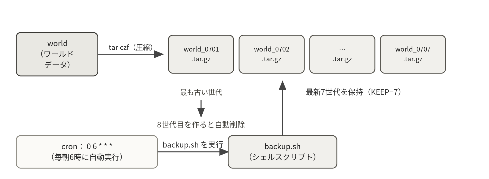

ワールドデータを失わないためのバックアップの仕組みを構築する。バックアップをスクリプト化してcronで自動化し、削除したワールドをバックアップから復旧する。
タイムテーブル（180分）
| 時間 | 内容 |
|---|---|
| 20分 | ミニ講義：バックアップ設計の考え方（3-2-1ルール、世代管理） |
| 30分 | tarによる手動バックアップ |
| 40分 | シェルスクリプト作成（backup.sh） |
| 30分 | cronによる自動化と時刻管理 |
| 40分 | リストア訓練＋障害対応演習 |
| 20分 | 確認項目の達成チェック・振り返り |
4-1バックアップの考え方
何日もかけて建てた建築物が、ディスク故障や操作ミス、荒らしによって一瞬で消える。ゲームサーバに限らず、データ消失はサーバ運用最大の事故である。防ぐ手段はただ一つ、バックアップである。実務では「3-2-1ルール」（3つのコピーを、2種類の媒体に、1つはリモートに置く）が知られる。本実習ではその第一歩として、世代管理付きの自動バックアップを構築する。
tarによるアーカイブ
複数のファイルを1つにまとめる（アーカイブする）にはtarコマンドを使う。gzipによる圧縮も同時に行える（拡張子 .tar.gz）。
tar czf 出力ファイル.tar.gz 対象ディレクトリ # 作成（c:作成 z:gzip圧縮 f:ファイル名）
tar xzf アーカイブ.tar.gz # 展開（x:展開）
tar tzf アーカイブ.tar.gz # 中身の確認（t:一覧表示）演習：手動バックアップ
luantiユーザに切り替えて、ワールドデータ（worldディレクトリ）を手動でバックアップしてみる。
su - luanti # luantiユーザに切り替え
mkdir -p ~/backup
tar czf ~/backup/world_test.tar.gz -C ~/server world
tar tzf ~/backup/world_test.tar.gz | head # 中身を確認※ -C ~/server は「~/serverに移動してからworldをまとめる」という指定で、展開時に余計な深い階層ができるのを防ぐ。バックアップは「取れた」だけで安心せず、必ず中身を確認する癖をつけること。
4-2シェルスクリプト（backup.sh）
毎回手でコマンドを打つのは面倒だし、打ち間違いも起こる。一連のコマンドをファイルにまとめたものがシェルスクリプトである。変数・コマンド置換・条件分岐が使えるため、「日付入りのファイル名を付けて、古い世代を自動で消す」といった賢いバックアップが書ける。luantiユーザのまま、viで ~/backup.sh を作成しよう。
#!/bin/bash
# Luantiワールドの世代管理付きバックアップ
SRC="$HOME/server/world" # バックアップ対象
DEST="$HOME/backup" # 保存先
KEEP=7 # 残す世代数
DATE=$(date +%Y%m%d_%H%M%S) # 実行時刻（コマンド置換）
mkdir -p "$DEST"
tar czf "$DEST/world_$DATE.tar.gz" -C "$HOME/server" world \
|| { rm -f "$DEST/world_$DATE.tar.gz"; echo "$(date '+%F %T') backup FAILED" >> "$DEST/backup.log"; exit 1; }
# 古い世代の削除（新しい順に並べ、KEEP+1件目以降を消す）
cd "$DEST" || exit 1
ls -1t world_*.tar.gz 2>/dev/null | tail -n +$((KEEP+1)) | xargs -r rm --
echo "$(date '+%F %T') backup done: world_$DATE.tar.gz" >> "$DEST/backup.log"1行目の #!/bin/bash はシバンといい、このファイルをbashで実行することを宣言する。$( ) はコマンド置換で、コマンドの実行結果を変数に入れられる。世代削除の行は、ls・tail・xargsをパイプでつないだ応用例である（第1回の知識が総動員されている）。作成したら実行権を付与して動かす。各道具の詳しい説明は補足資料3.7節にまとめてある。また、tarの行に付けた || { … } は「失敗したら、作りかけの壊れたファイルを消し、失敗の記録を残して即終了する」仕掛けである。これがないと、ディスク枯渇などでバックアップが壊れても backup done と記録され、さらに壊れた作りかけのファイルが世代として数えられて、正常な旧世代が世代削除で押し出されてしまう（4-5節のシナリオDで実際に確かめられる）。

chmod +x ~/backup.sh # 実行権の付与（第3回のパーミッションの実践）
~/backup.sh # 実行
ls -lt ~/backup # 日付入りのバックアップができていることを確認
cat ~/backup/backup.log # 実行記録の確認何度か実行して、バックアップが増えること、8世代目を作ると最も古いものが消えることを確認しよう。
4-3cronによる自動化
人間は実行を忘れる。だから自動化する。指定した時刻にコマンドを定期実行する仕組みがcronであり、crontabコマンドで設定する。
crontab -e # スケジュールの編集（luantiユーザのまま実行）
（末尾に次の1行を追記）*/10 * * * * /home/luanti/backup.shcrontab -l # 設定の確認スケジュールは左から「分 時 日 月 曜日」で指定する。上の例は動作確認用に「10分ごと」としている。確認できたら、実運用を想定して「毎日朝6時」（0 6 * * *）に変更しよう。なお、初回の crontab -e ではエディタの選択画面（英語）が表示される。番号で使い慣れたもの（vim.basic等）を選べばよい。間違えたら select-editor でやり直せる。
| 書式例 | 意味 |
|---|---|
0 6 * * * | 毎日6時0分 |
30 23 * * 0 | 毎週日曜23時30分 |
*/10 * * * * | 10分ごと |
0 */6 * * * | 6時間ごと（0時、6時、12時、18時） |
時刻管理（NTP）
cronは「サーバの時計」に従って動く。時計がずれていれば、バックアップの時刻もログの時刻もすべてずれ、障害調査で「いつ何が起きたか」を特定できなくなる。サーバの時刻はNTP（ネットワーク経由の時刻同期）で自動調整されており、timedatectlで確認できる。
timedatectl
Local time: Thu 2026-07-02 14:00:12 JST
Time zone: Asia/Tokyo (JST, +0900)
System clock synchronized: yes # ←時刻同期が効いている
（第1回の初期設定で設定済みのはずだが、JSTでない場合は次で設定する）
sudo timedatectl set-timezone Asia/Tokyo4-4リストア訓練
「バックアップを取っている」と「復旧できる」の間には大きな溝がある。復旧手順を試したことがなければ、本番の障害時には必ず手が止まる。だから平時に訓練する。これから自分のワールドを自分で破壊し、バックアップから復旧しよう。
~/backup.sh # 直前のバックアップを取る（復旧用の確保）
exit # 自分のユーザに戻る
sudo systemctl stop luanti # ①サービス停止（稼働中に消すと不整合の元）
su - luanti
rm -rf ~/server/world # ②ワールドを完全に削除（！）
ls ~/server # worldが消えたことを確認tar xzf ~/backup/world_最新の日時.tar.gz -C ~/server # ③復元
ls ~/server/world # 戻ったことを確認
exit
sudo systemctl start luanti # ④サービス再開ワールドに接続し、建築物が破壊前の状態に戻っていることを自分の目で確認しよう。この「停止→復元→再開→確認」の流れが、あらゆるデータ復旧の基本形である。
※ ワールドの実体はSQLiteデータベース（world/map.sqlite）であり、稼働中のコピーはまれに不整合を起こしうる。確実なのはサービスを停止してからのバックアップである。毎朝6時の自動実行なら利用者が少なく実害はほぼないが、「停止→バックアップ→再開」の自動化は発展課題とする。
4-5障害対応演習（壊して学ぶ）
障害対応の力は、実際に壊れたサーバを直した経験の数で決まる。そこで、自分のサーバに自分で障害を起こし、症状を観察してから復旧する訓練を行う。意図的に障害を起こして耐性を確かめる手法は「障害注入」と呼ばれ、実務でも大規模サービスの信頼性向上に使われている。4-4節でバックアップと復旧手順を確認済みだからこそ、安全に壊せる。
下の障害シナリオから2つ以上を選び、次の手順で取り組む。①壊す前に「どんな症状が出るか」「どの診断コマンドに現れるか」を予想して実験記録に書く。②壊す。③診断コマンドで症状を確認し、予想と比べる。④復旧する。⑤原因・症状・復旧手順を実験記録にまとめる。予想と違う症状が出たときこそ、学びが大きい。
| シナリオ | 壊し方（自分のサーバで実行） | 学べること |
|---|---|---|
| A | ユニットファイルのExecStartのパスを1文字書き換えて daemon-reload → restart | サービス起動失敗の診断（status／journalctl） |
| B | sudo chown -R root:root /home/luanti/server/world にして restart | 権限エラー（Permission denied）の診断 |
| C | sudo ufw delete allow 30000/udp を実行（復旧は allow し直す） | 「サービスは正常なのに接続できない」の切り分け |
| D | df -h で空き容量を確認したうえで、空きを数MBだけ残す巨大ファイルを作る：fallocate -l $(( $(df --output=avail -BM ~ | tail -1 | tr -dc 0-9) - 5 ))M ~/bigfile 。その後 backup.sh を実行する（ワールドは数MB〜数十MBなので「9割」程度では失敗しない。復旧は rm ~/bigfile） | ディスク枯渇の症状とバックアップ失敗の検知 |
診断の基本手順は次のとおりである。「エラーメッセージを読む→仮説を立てる→確認する」を繰り返すのが障害対応であり、当てずっぽうで設定をいじり回すと障害が増えるだけである。
| 手順 | コマンド |
|---|---|
| ① サービスの状態を見る | systemctl status luanti |
| ② ログでエラーを読む | journalctl -u luanti -e |
| ③ リソースを疑う | df -h（ディスク）、free -h（メモリ） |
| ④ 権限を疑う | ls -l で所有者とパーミッションを確認 |
| ⑤ ネットワークを疑う | ss -ulnp（ポートの待ち受け確認）、ufw status |
※ 壊すのは必ず自分のサーバだけ。復旧できなくなったときの最終手段は、4-4節のバックアップからのリストアである。「バックアップがあるから安全に実験できる」、この安心感こそ、バックアップの最大の価値である。また、30分試しても復旧できないときは、そこまでの診断記録を持って教員・支援員に相談すること。行き詰まった過程の記録も立派な成果である。
確認項目
達成したら日時・実行コマンド・結果を実験記録に残すこと。
- backup.shが世代管理付きで動作することを確認した
- cronによる自動実行を確認した（backup.logに自動実行の記録がある）
- 破壊したワールドをバックアップから復旧し、ゲーム内で確認した
- 障害シナリオ2つ以上について、予想・症状・復旧手順を実験記録に残した
発展課題
- sqlite3コマンドの
.backup機能を調べて、稼働中でも安全にmap.sqliteを複製できるバックアップに改良してみよう。 - scpコマンドで、バックアップをBYODに転送してみよう（
scp luanti@ホスト名.local:~/backup/最新.tar.gz .）。これで「1つはリモートに」の一歩手前まで来た。 - logrotateを調べて、backup.logが肥大化しない仕組みを作ってみよう。